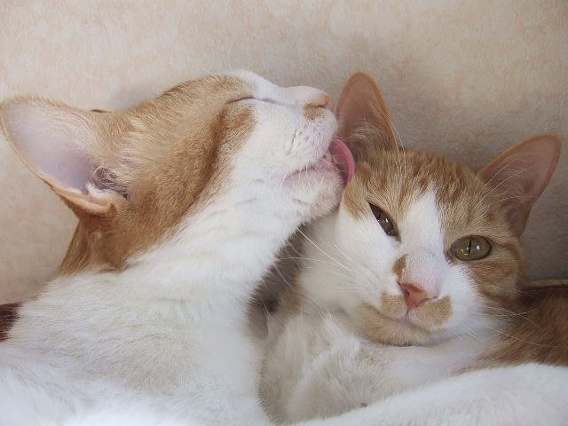
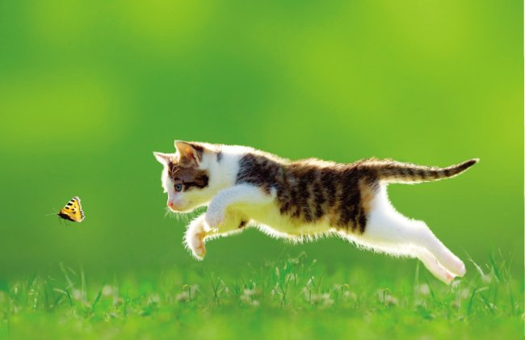

고양이의 습성
고양이의 습성으로는 대략 3가지로 나눌 수 있다.
사냥본능
고양이는 소형류들을 사냥하는데 타고난 능력을 가지고 있으며, 그에 맞는 사냥본능이 몸에 스며들어 있다. 항시 발톱을 날카롭게 갈고 있으며, 주인을 상대로 감각을 잃지 않기 위해 일종의 놀이 수련을 한다.
청결 유지
매일 그루밍(몸의 털을 핥아주어 깨끗함을 유지하는 행동)을 하여 청결을 유지한다. 이것은 고양이가 천적인 설치류들을 사냥하는 데 있어 매우 중요하기에 필요한 행동이다.
야행성
고양이의 사냥감인 소형 동물들은 주로 야행성이기에, 그에 맞춰 진화한 고양이 특성상 야행성 사냥활동이 잦다.